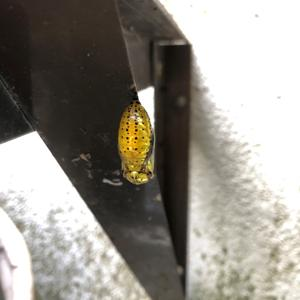

うるがいの話 ある日
最新: ３８度５分の熱
うるがいとは 前提知識です
カニの画像をクリックすると『うるがいの話』サイトを表示します
うるがい(ｳﾙｶﾞｲ urugai)とは、『もずくがに』の名前でとても大きくなります。
たながー（ﾀﾅｶﾞｰtanagaa）とは手長えびのことで、何種類かあり大きいのは車 エビぐらいになります。
ぶながー(bunagaa)とは、赤い髪の毛、赤い身体、そして身長は１ｍ２０ｃｍ ぐらい、川の蟹を食べているの目撃された。場所は沖縄県国頭郡大宜味村のと ある村僕の隣近所に住んでいる爺さんから、聞いた話です。
2021年08月16日 (月）
３８度５分の熱
18:58

１回目のワクチン接種でいくらか免疫がつくことで、２回目の接種の方が、免
疫反応が起こりやすくなるため、発熱や倦怠感、関節痛などの症状が出やすく
なります。
甲子園を見ている。沖縄尚学が気になる・・・。ハイサイおじさんが流れてい
たり、アナウンサーがいつもなら指笛が聞こえてくるんですが今年は声を出す
ことを禁止されてますとか、ヒット打つとめちゃくちゃ跳ねる赤い服の子とか
。 野球以外の情報が濃すぎる！応援したくなる!
いずれもネットで拾った文字である。昼間、あまりにも体が熱いので熱を測る
とヤバ、熱が３８度以上でたら飲む熱さましトンプクを飲む。では